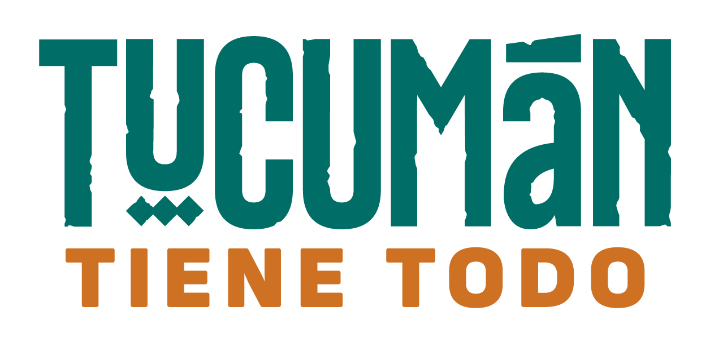
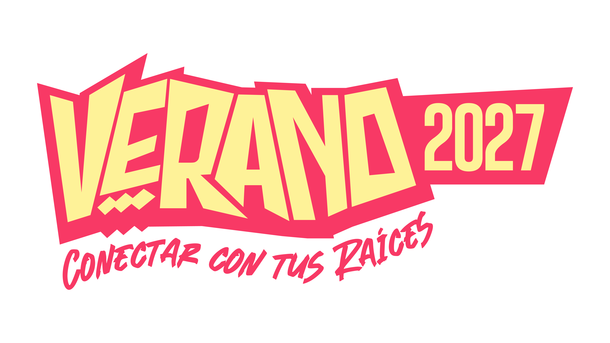
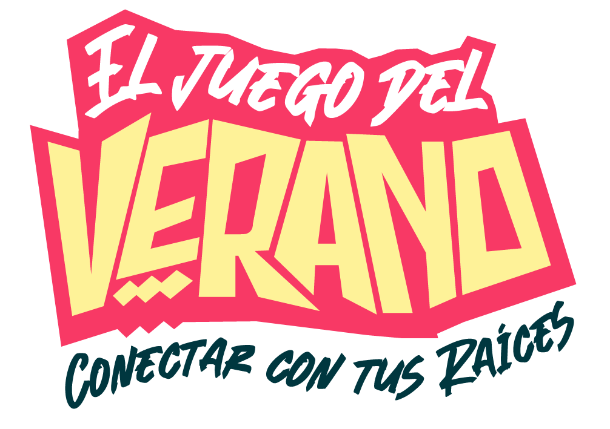
Recorré Tucumán, sellá tu diario y ganá premios reales.
Entrás en un toque. Los datos para premios te los pide Ajustes ⚙, cuando quieras.
Los sellos se activan con GPS en cada punto (o QR de respaldo).
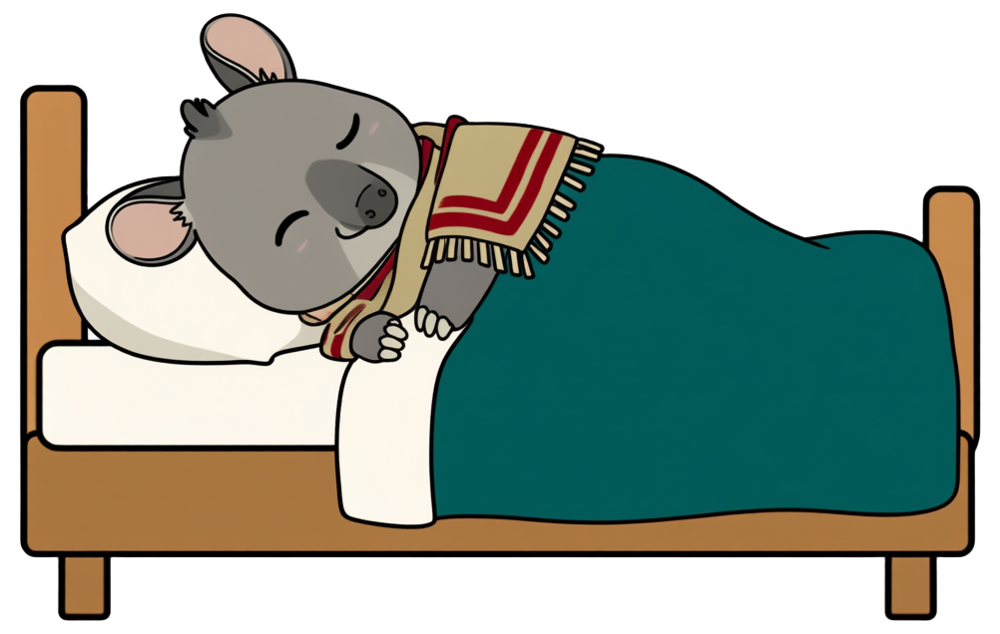
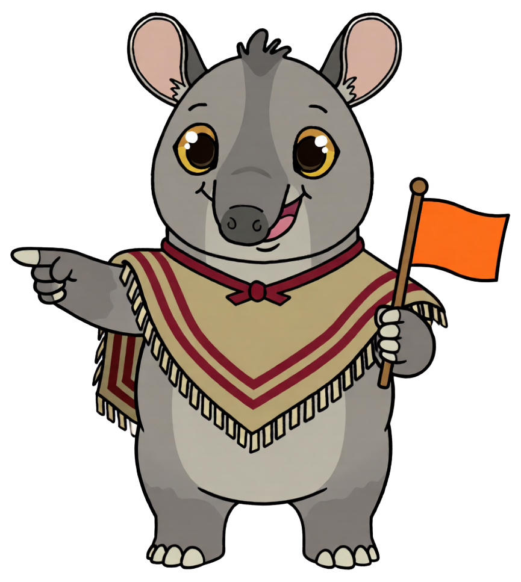
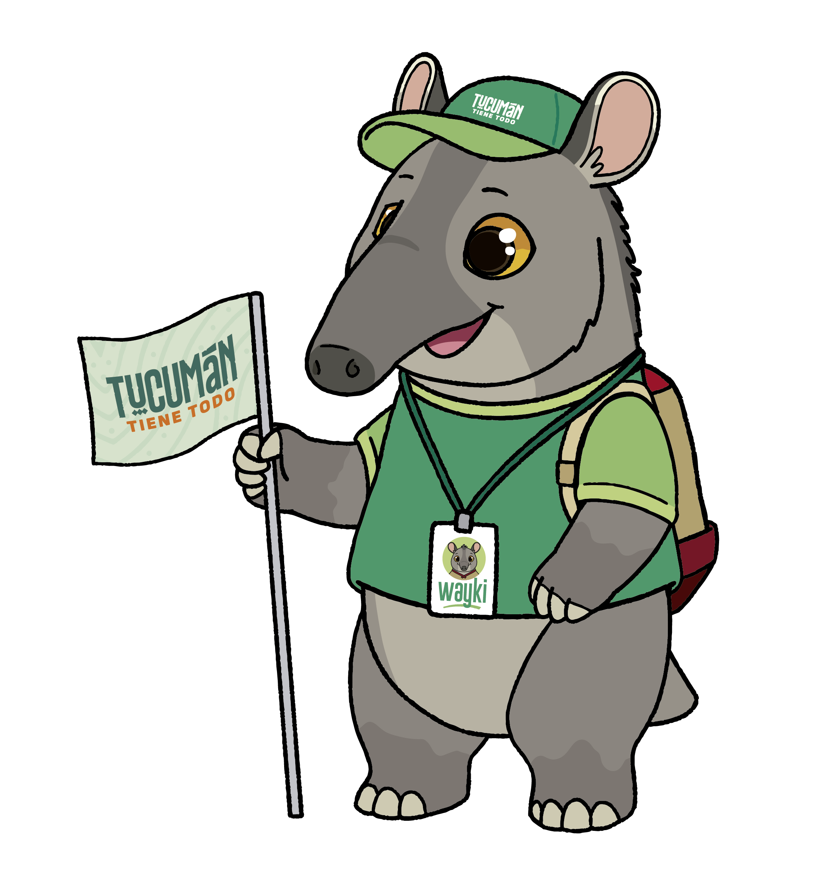
Los folletos oficiales del Ente por circuito, 2026. Van con mapa de cada zona, servicios y teléfonos — funcionan en papel y offline en el celular. Los sellos del diario salen de acá.
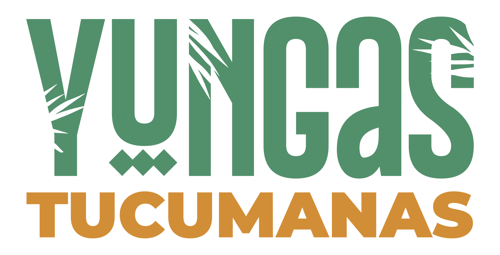
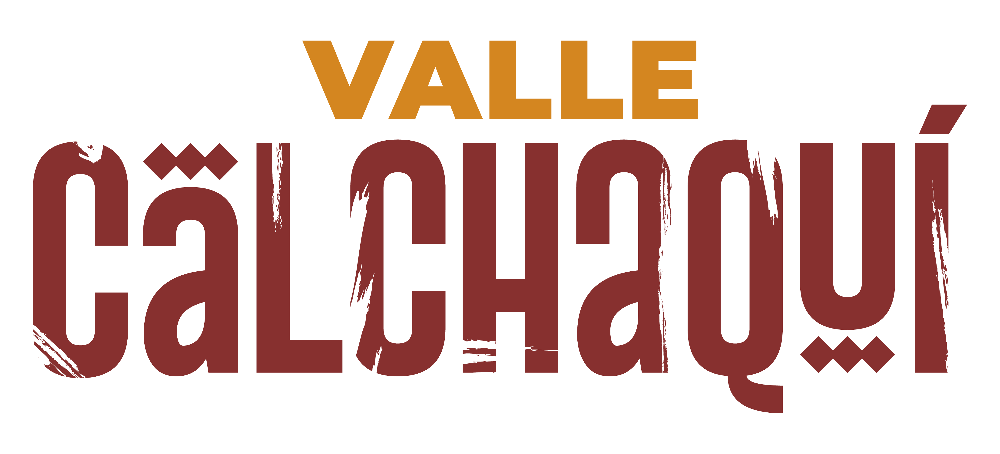
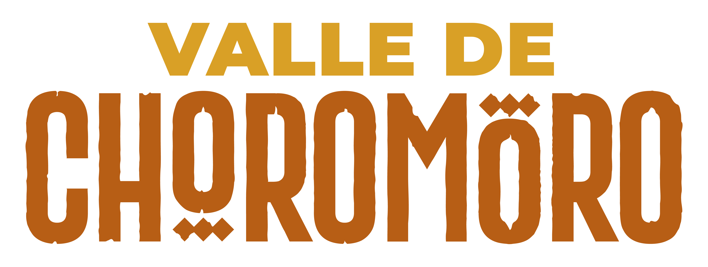
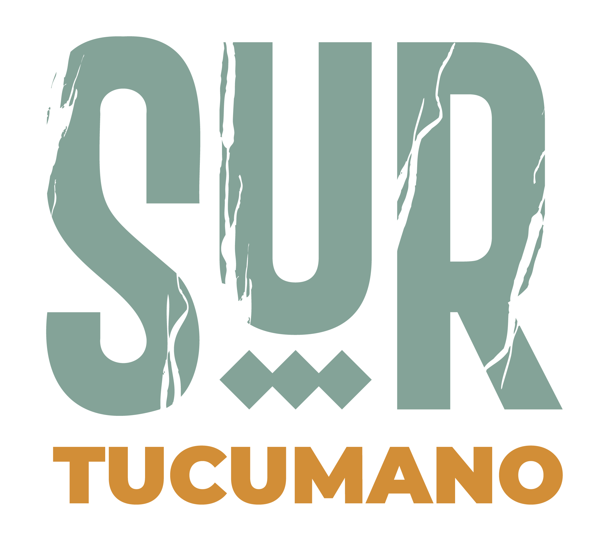
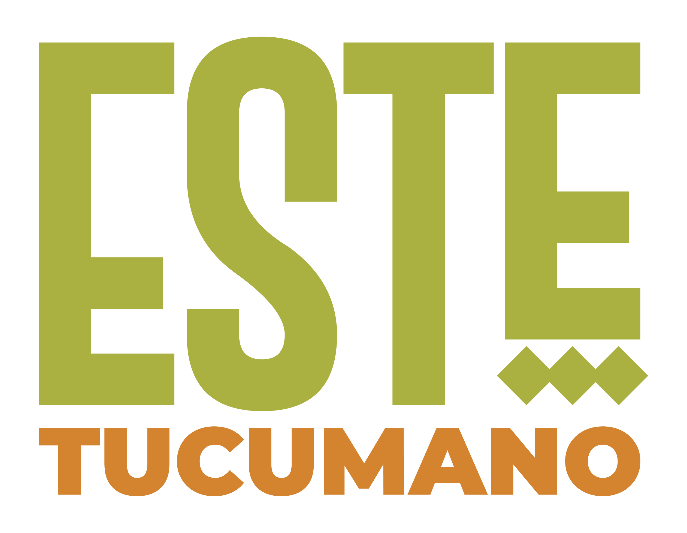
Block de los 5 circuitos, imprimible — la versión en una hoja para imprimir en casa: descargar PDF ↗
Canje físico en la Casa Central del Ente y comercios adheridos. Los sellos no se gastan: se acumulan.
Opcional y en tu tiempo. Los pedimos para que puedas canjear premios y enterarte de temporadas.
Cada sello y cada noche es un dato limpio — con hora, punto y dispositivo. La telemetría que el juego produce solo, todos los días del verano.
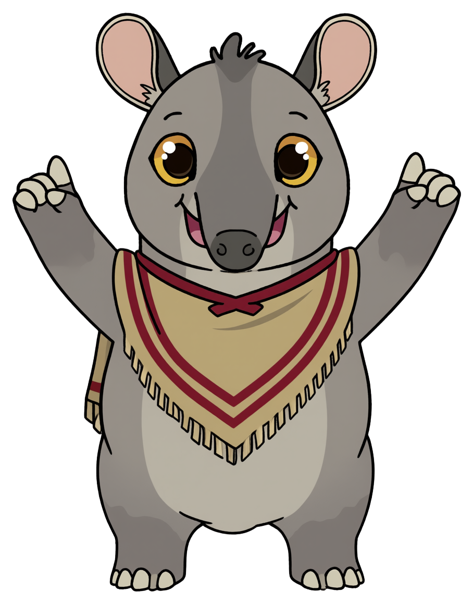